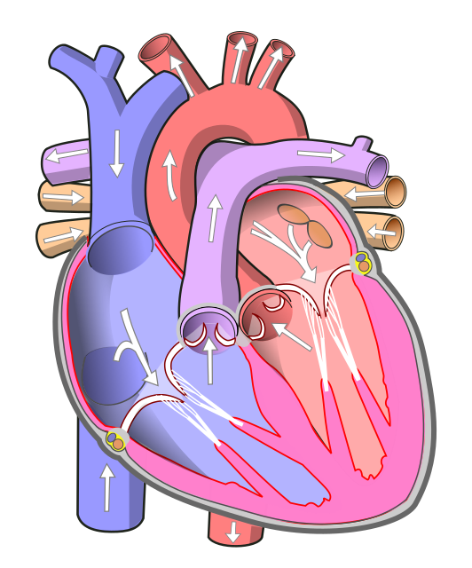

RL
Whole-body circulationDrag to rotate · Scroll to zoom · Select a vessel
3D rendering is unavailable. Use the vessel explorer, Heart lab and Flow routes to study all anatomy.
Oxygen-rich Oxygen-poor→ Flow direction
Colors indicate relative oxygenation, not artery/vein identity. Arrows show normal direction; particle speed is illustrative.
ANATOMICAL CUTAWAYAnterior orientation · patient’s left →

Flow arrows are part of the anatomical plate. Numbered markers open structure notes.
Wapcaplet, Yaddah, Wnauta; revisions by Jmarchn · Wikimedia Commons · CC BY-SA 3.0
DIRECTION MATTERS
A continuous journey, two circuits.
The pulmonary circuit exchanges gases in the lungs. The systemic circuit delivers blood to the tissues.
ANATOMY → CLINICAL REASONING
Make the connections.
Eight anatomical correlates, with references and space for your own study notes.
YOUR STUDY NOTES
Keep the useful connections.
Notes save in this browser on this device. Export a copy to keep or share them.
Stored on this device only.